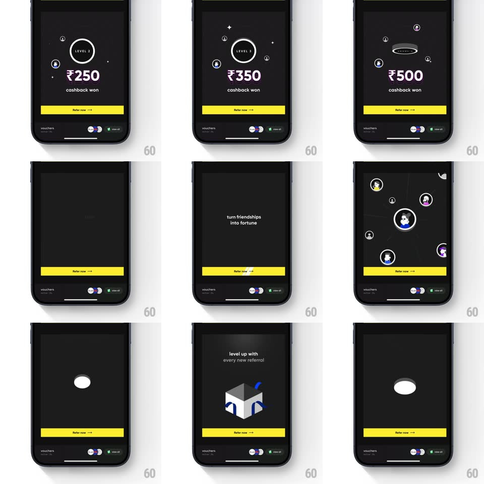

Media
Frame-by-frame

Rebuild this interaction 1:1: CRED's referral cashback promo - an auto-playing sequence that counts up through referral levels (LEVEL 1 ₹200, LEVEL 2 ₹250, LEVEL 3 ₹350, LEVEL 4 ₹500) as friend avatars orbit and connect into a growing network around you, over "turn friendships into fortune", ending on the CRED gift box and a rupee unlock.

Rebuild this interaction 1:1: CRED's referral cashback promo - an auto-playing sequence that counts up through referral levels (LEVEL 1 ₹200, LEVEL 2 ₹250, LEVEL 3 ₹350, LEVEL 4 ₹500) as friend avatars orbit and connect into a growing network around you, over "turn friendships into fortune", ending on the CRED gift box and a rupee unlock. ## Integration Integration: stack-agnostic spec - springs given as stiffness/damping, timed motions as duration + curve; map every value to your framework and animation library of choice. ## Scene Black promo card: a center ring labeled LEVEL N over a large "₹amount cashback won", a yellow "Refer now" button, and a voucher footer. Later frames: friend avatars connected by dotted lines around your avatar, a 3D CRED box, and a dark screen with a glowing ₹ medallion. ## Motion spec Pattern: auto-playing level-up counter with network build. - Levels: each level holds ~900ms; on advance the level ring pulses (scale 1 -> 1.15 -> 1, 300ms) and the amount counts up with a digit roll (~250ms); a new friend avatar pops onto the field (scale 0 -> 1.2 -> 1, 300ms) and a dotted line draws to the center. - Avatars drift slowly on circular paths (~10s/rev) with twinkling star dots scattered behind. - Interstitial: "turn friendships into fortune" fades in word-by-word (~150ms per word) on the black field. - Network beat: avatars pull inward and cluster around the center avatar (spring ~280/20, 500ms), lines redrawing to the hub. - Finale: the cluster fades, the 3D CRED box rotates in (slow Y spin, ~6s/rev), then the ₹ medallion rises with a soft glow pulse. ## Calibration - Purple-tinted amounts, white ring, yellow CTA - the palette never changes across levels. - The sequence loops or ends static; the CTA is always visible. ## Reduced motion Levels crossfade (200ms); avatars appear without pops; no orbiting. ## Don't miss - The level ring is a thin outline circle with LEVEL N inside - not a filled badge. - Friend avatars are photos, not icons - the network reads as real people.